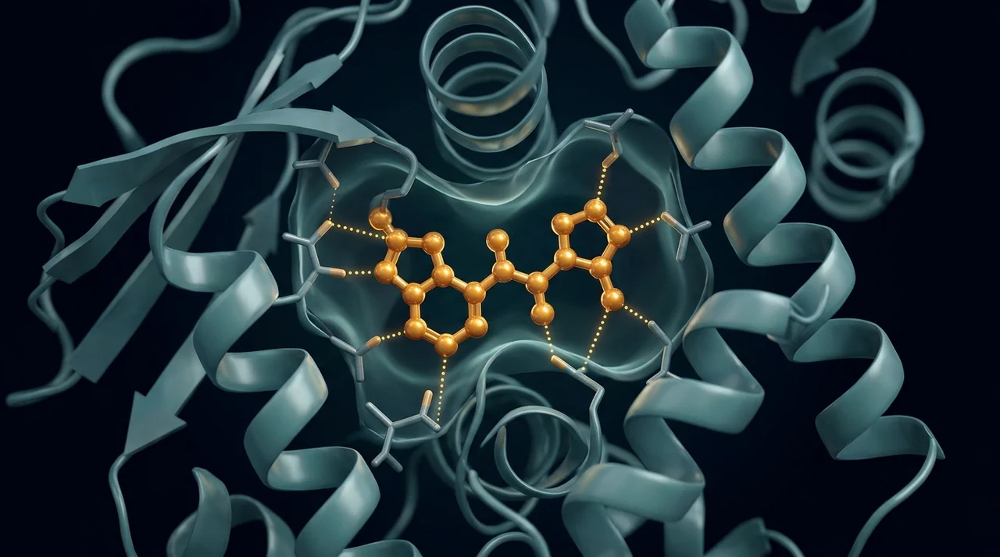

In-Silico Ar-Ge · Küçük Molekül & PeptidHesaplamalı İlaç Keşfi (CADD), MD ve Kuantum Kimyası
Islak laboratuvar sentez maliyetine girmeden önce hedef doğrulanması, sanal tarama kampanyaları, moleküler docking (AutoDock Vina, Gnina, Flare), GROMACS MD bağlanma stabilitesi, DFT/QM-MM hesapları ve ADMET triyajı.